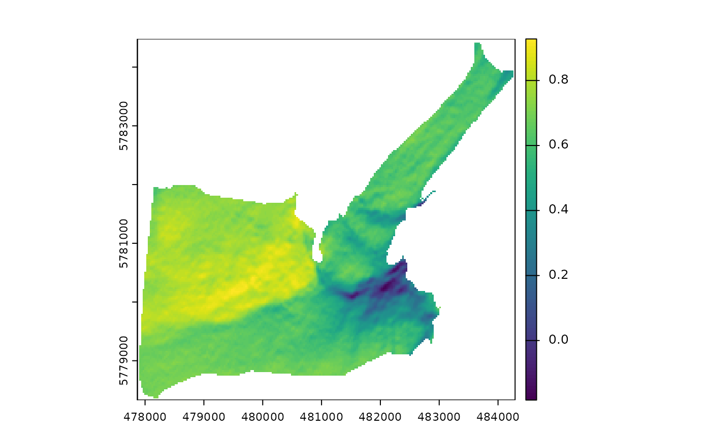
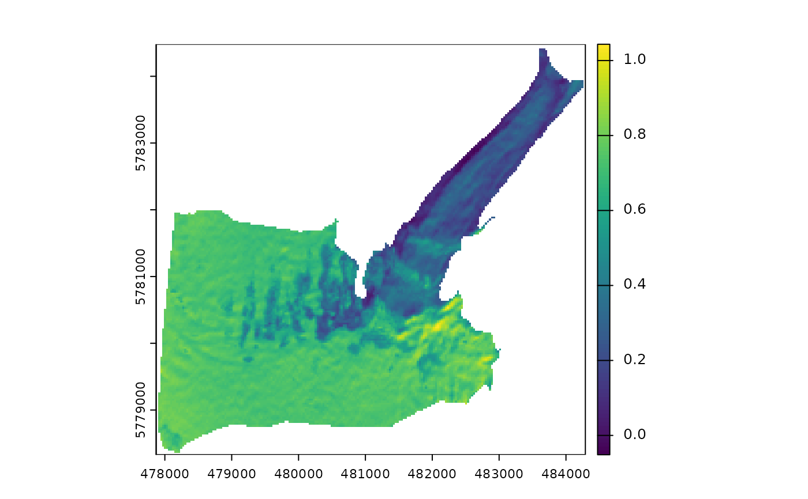
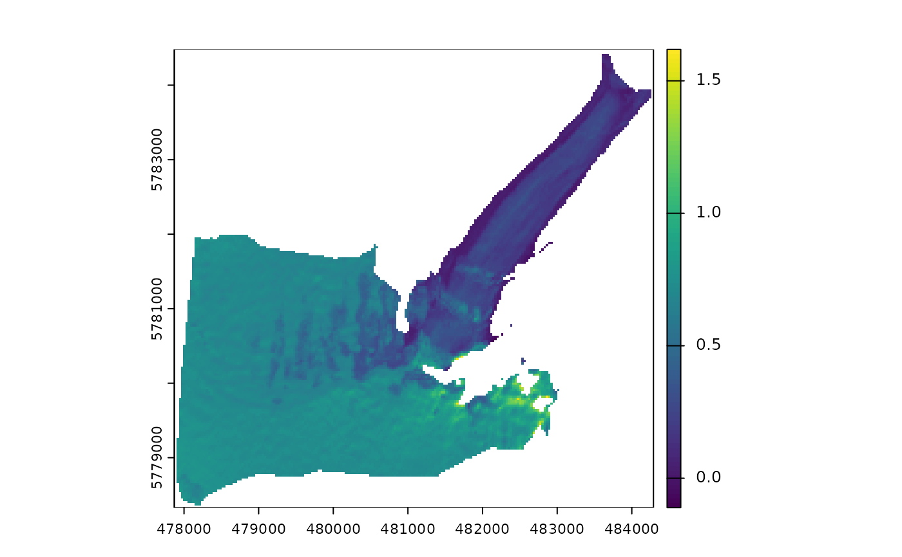

This tool corrects surface reflectance for the effects of topography. The objective of the topographic correction is to compensate for the differences in solar illumination to minimize the variability of observed reflectance for similar targets and obtain the equivalent reflectance values over flat terrain. The empirical methods provided here are suitable for mountain environments with rugged topography and non-Lambertian surface properties. More details about these methods can be found in the references below.
Arguments
- band
SpatRaster. Spectral band to be corrected.
- dem
SpatRaster. Digital elevation model representing terrain elevation on a regular grid.
- SAA
SpatRaster or numeric. Solar azimuth angle in degrees.
- SZA
SpatRaster or numeric. Solar zenith angle in degrees.
- method
character. Topographic correction model to be used. Two options are available: "tanrotation" (implements the rotation model proposed by Tan et al. 2010) , and "ccorrection" (C model, Teillet et al. 1982) .
- IC_min
numeric. Minimum incidence angle to mask out regions of low illumination.
Value
Returns a list with two objets. The first component is a SpatRaster with two layers providing the illumination condition (IC) and the corrected surface reflectance, and the second component contains the values of the empirical parameters obtained by each topographic correction model.
References
Chen R, Yin G, Zhao W, Yan K, Wu S, Hao D, Liu G (2023).
“Topographic Correction of Optical Remote Sensing Images in Mountainous Areas: A systematic review.”
IEEE Geoscience and Remote Sensing Magazine, 11(4), 125–145.
doi:10.1109/MGRS.2023.3311100
.
Riaño D, Chuvieco E, Salas J, Aguado I (2003).
“Assessment of different topographic corrections in Landsat-TM data for mapping vegetation types.”
IEEE Transactions on Geoscience and Remote Sensing, 41(5), 1056–1061.
doi:10.1109/TGRS.2003.811693
.
Tan B, Masek JG, Wolfe R, Gao F, Huang C, Vermote EF, Sexton JO, Ederer G (2013).
“Improved forest change detection with terrain illumination corrected Landsat images.”
Remote Sensing of Environment, 136, 469–483.
doi:10.1016/j.rse.2013.05.013
.
Tan B, Wolfe R, Masek J, Gao F, Vermote EF (2010).
“An illumination correction algorithm on Landsat-TM data.”
In 2010 IEEE International Geoscience and Remote Sensing Symposium, 1964-1967.
doi:10.1109/IGARSS.2010.5653492
.
Teillet PM, Guindon B, Goodenough DG (1982).
“On the Slope-Aspect Correction of Multispectral Scanner Data.”
Canadian Journal of Remote Sensing, 8(2), 84–106.
doi:10.1080/07038992.1982.10855028
.
See also
preproc(), landsat::topocorr()
Examples
library(terra)
outline <- system.file("extdata/athabasca_outline.shp", package = "SatRbedo")
nir <- system.file("extdata/athabasca_B8A_20200911.tif", package = "SatRbedo")
dem <- system.file("extdata/athabasca_dem.tif", package = "SatRbedo")
nir <- preproc(grd = nir, outline = outline)
dem <- preproc(grd = dem, outline = outline)
SAA <- 164.8
SZA <- 48.9
# Topographic correction using method="tanrotation"
corr <- topo_corr(band = nir, dem = dem, SAA = SAA, SZA = SZA, method = "tanrotation")
plot(corr$bands[[1]]) # plot IC

plot(corr$bands[[2]]) # plot corrected surface reflectance

# Topographic correction using method="ccorrection"
corr <- topo_corr(band = nir, dem = dem, SAA = SAA, SZA = SZA, method = "ccorrection", IC_min = 0.3)
plot(corr$bands[[2]]) # plot corrected surface reflectance
